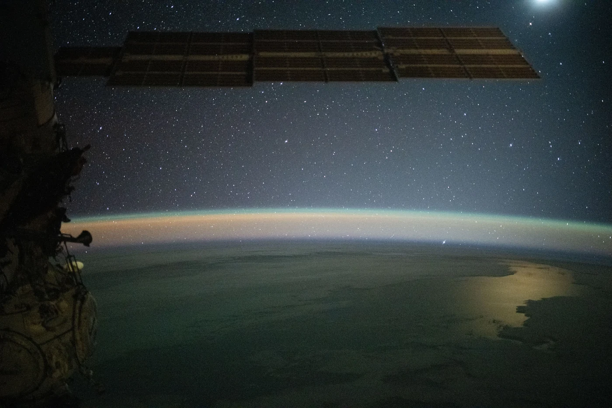
Oceanography
Oceanography
Explore the model ↗01

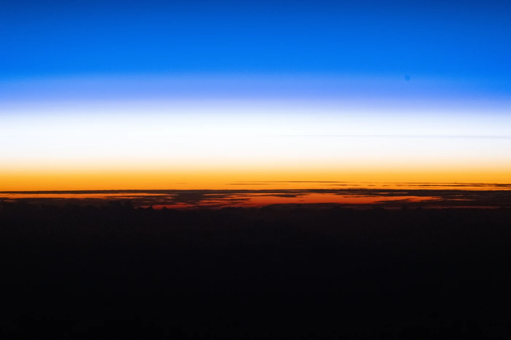
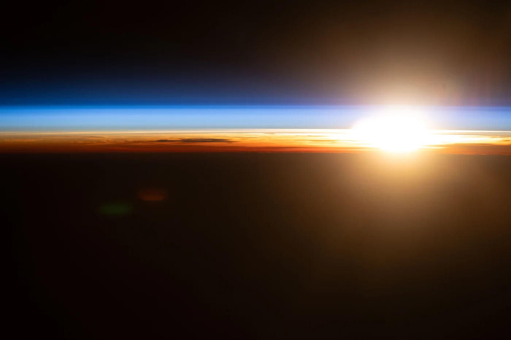
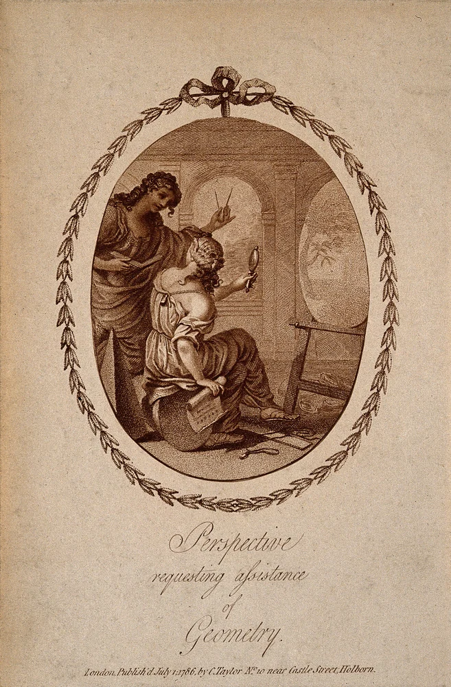
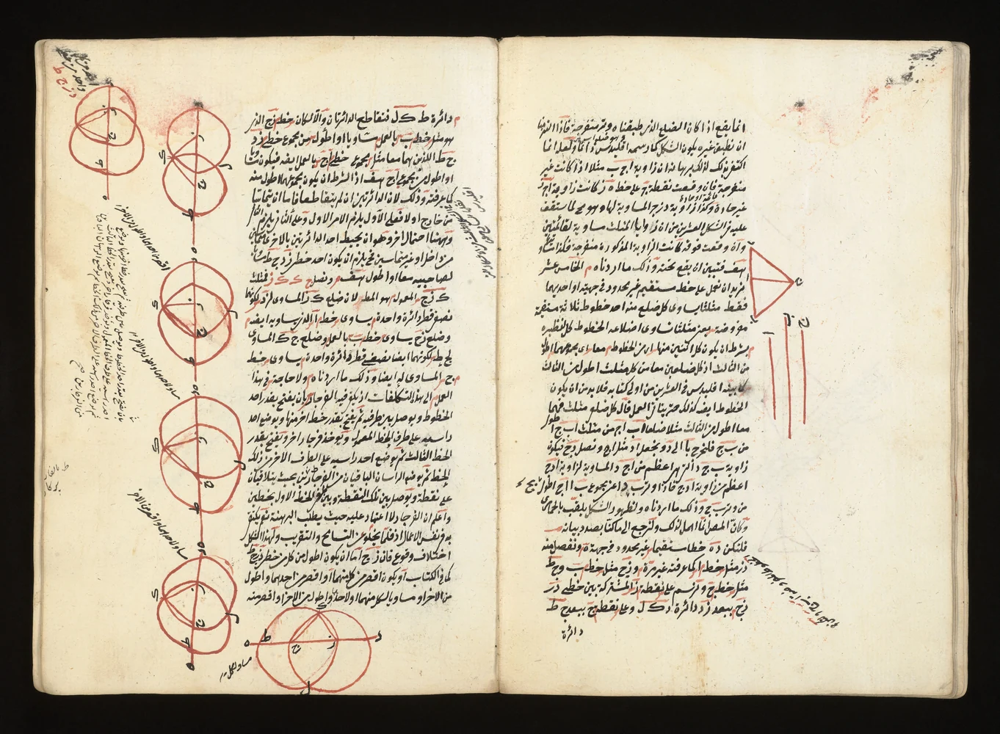
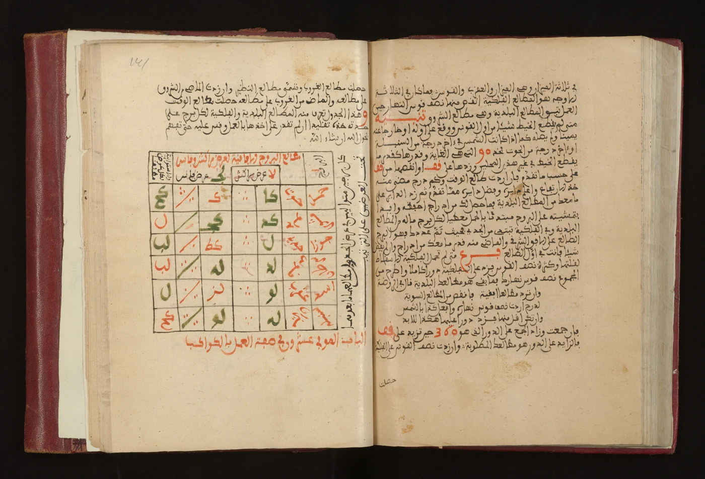
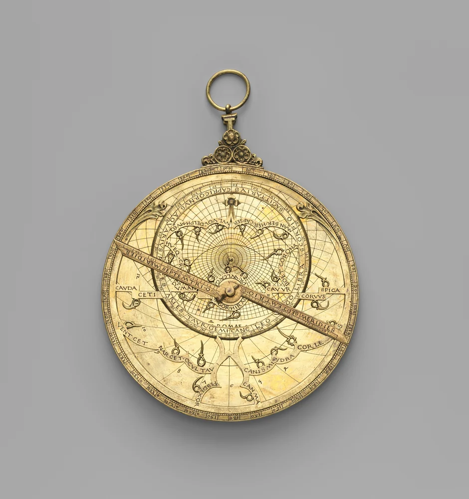
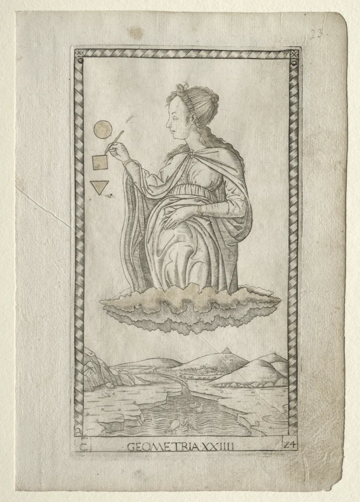
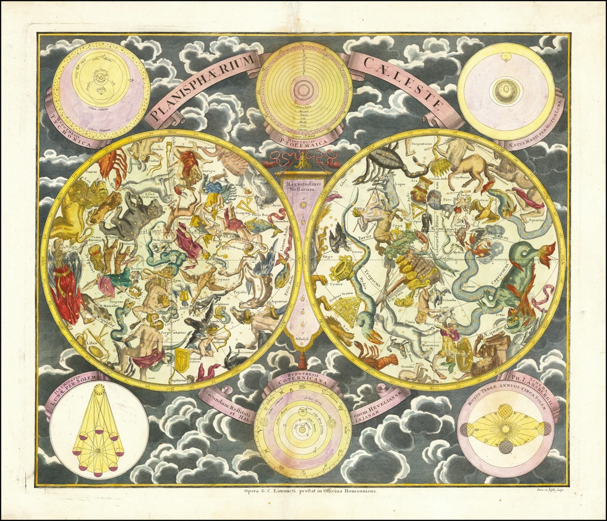
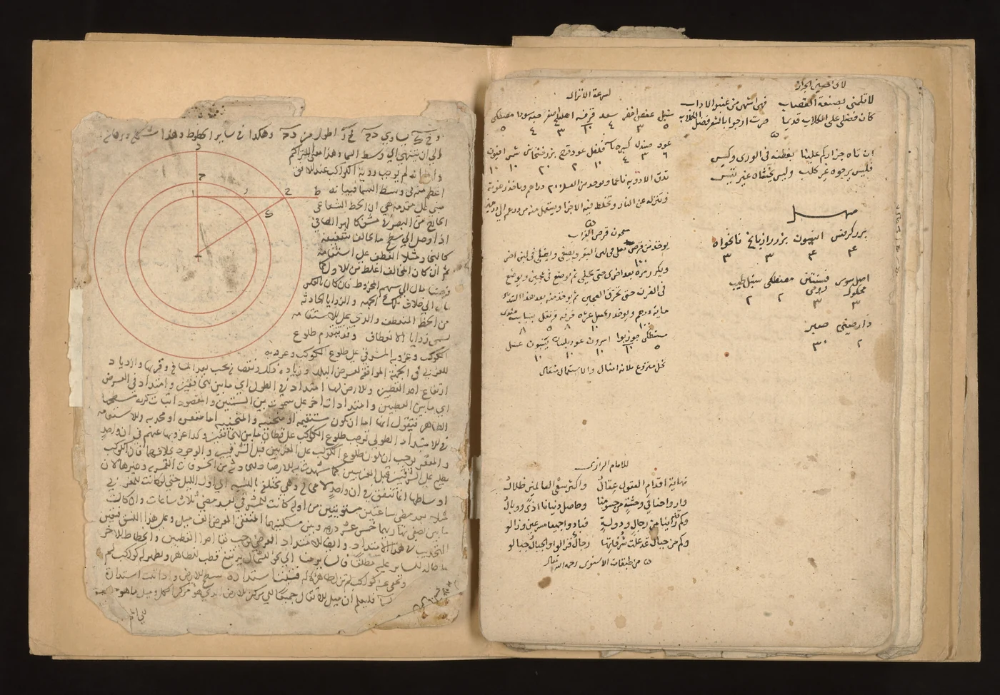
A different manuscript, with a restrained scholarly character.
View source ↗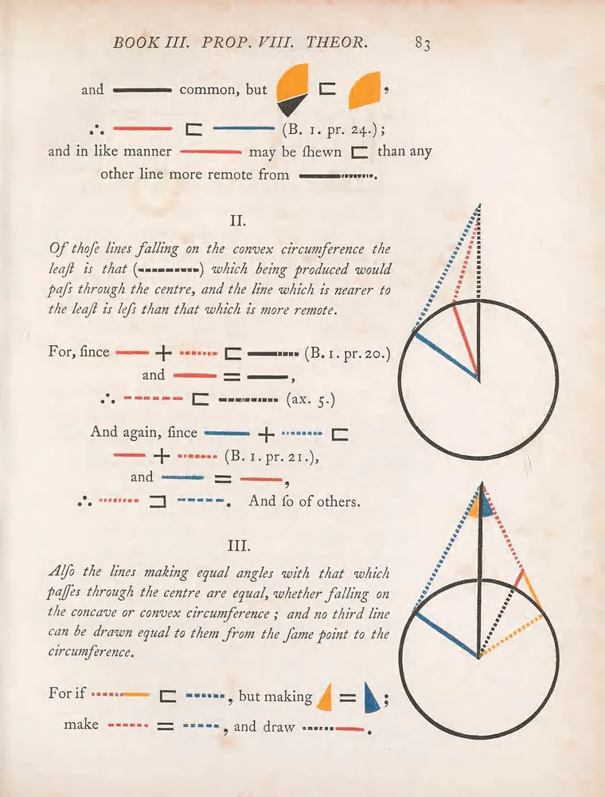
Clear colour and generous paper; a brighter mathematical direction.
View source ↗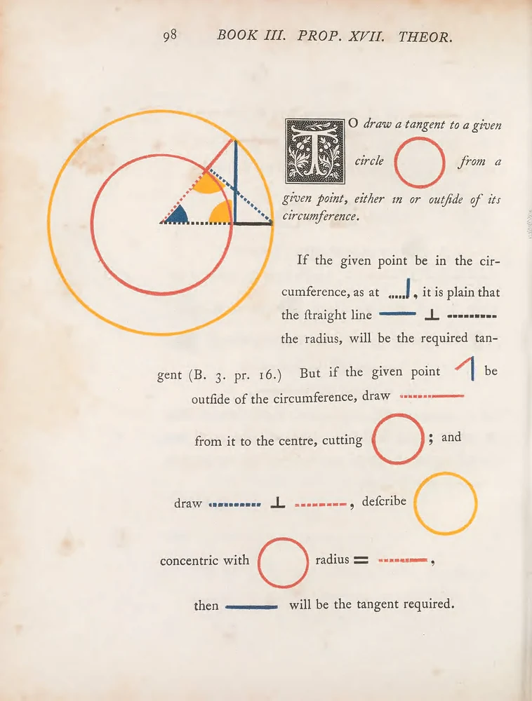